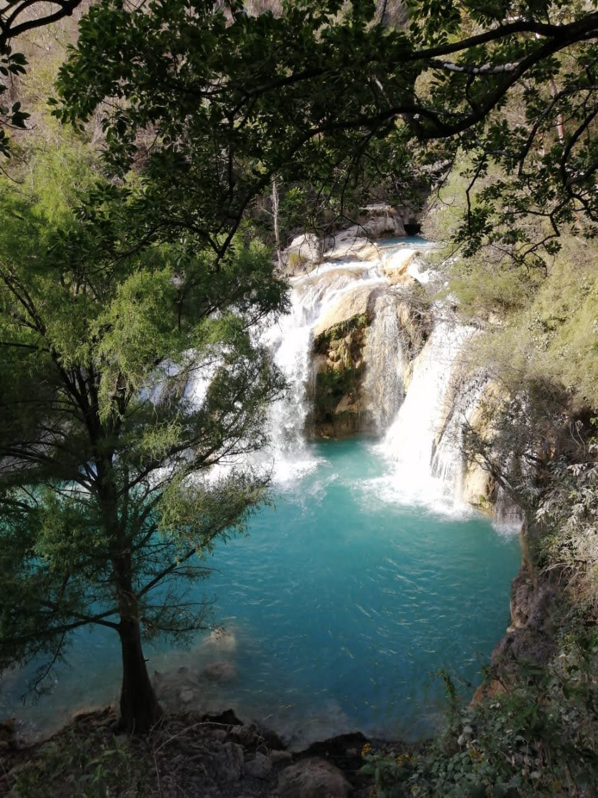
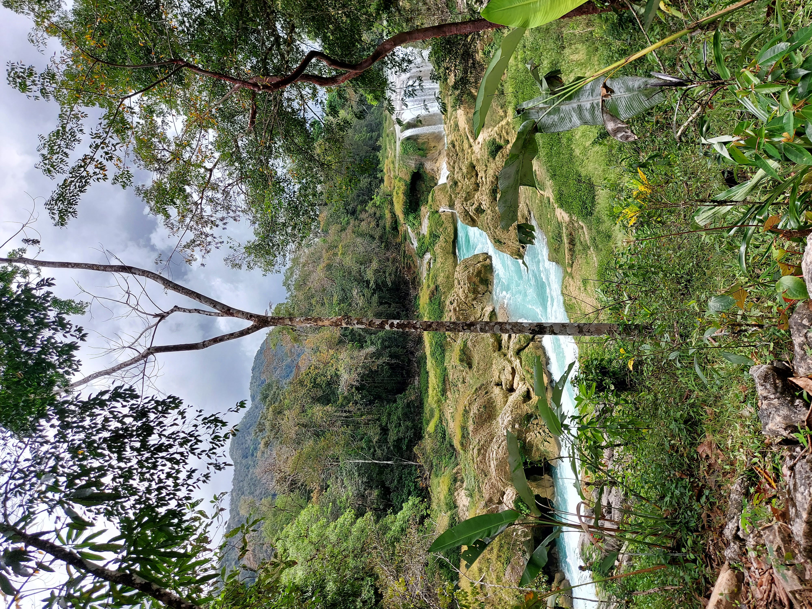
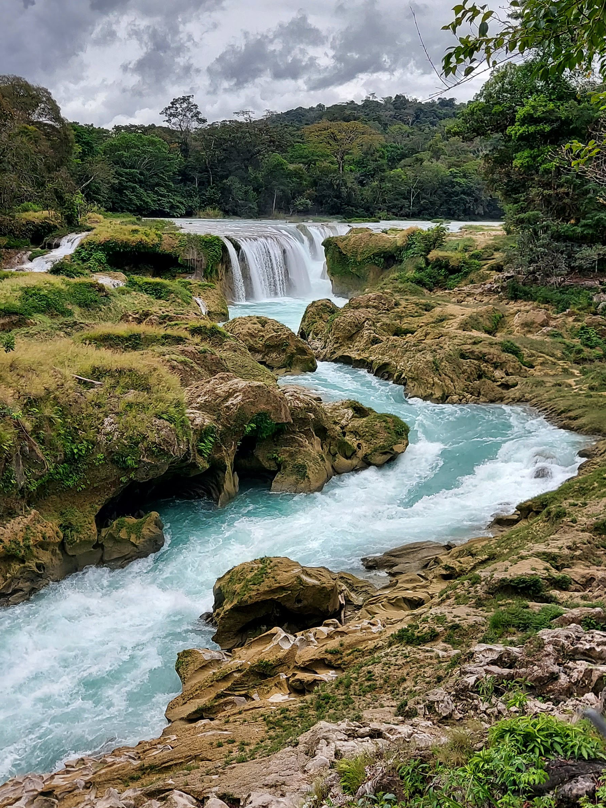

Distribuidos en una corta extensión, Comitán está lleno de elementos que le dan un significado profundo y rico al lugar, que inmediatamente notarás en su diversidad natural y complejidad cultural que lo caracteriza.
Origen
En su origen prehispánico, Comitán llevó el nombre de Balún Canan o “Lugar de las nueve estrellas”, dado por los indígenas tzeltales que lo fundaron. Años más tarde fue sometido por los aztecas, que lo renombraron como Comitán que significa “Lugar de Fiebres”. Fue hasta los primeros años del siglo pasado cuando se le dio el apellido Domínguez en memoria del médico y político mexicano, Belisario Domínguez.
Conoce másLugares cerca de Comitán



